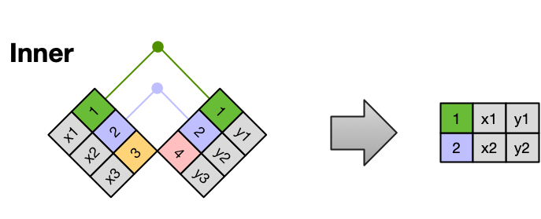

Merging data
In this lesson we will review how to join dataframes.
The section is based on the Data Modeling Essentials R lesson on merging data [1] from the NCEAS Learning Hub.
Types of joins
Frequently, analysis of data will require merging separate data frames. There are multiple ways to merge observations. When conceptualizing merges, we think of two tables, one on the left and one on the right.

Inner Join
An inner join is when you merge the subset of rows that have matches in both the left table and the right table.

Left Join
A left join takes all of the rows from the left table, and merges on the data from matching rows in the right table. Keys that don’t match from the left table are still provided with a missing value (na) from the right table.

Right Join
A right join is the same as a left join, except that all of the rows from the right table are included with matching data from the left, or a missing value. Notice that left and right joins can ultimately be the same depending on the positions of the tables.

Full Join
Finally, a full outer join (or just full join) includes all data from all rows in both tables, and includes missing values wherever necessary.

Sometimes people represent joins as Venn diagrams, showing which parts of the left and right tables are included in the results for each join. This representation is useful, however, they miss part of the story related to where the missing value comes from in each result.

pandas.merge()
To merge dataframes we can use the pandas.merge() function. The basic syntax for it is:
output_df = pd.merge(left_df,
right_df,
how = type_of_join,
on = column_to_join)where
output_dfis the dataframe resulting from the merge,left_dfis the dataframe we have “on the left side”,right_dfis the dataframe we have “on the right side”,howspecifies the type of join between the left and right dataframes, (check the options here), the default is to do an inner join,onspecifies the column to join on, this column must be present in both our dataframes.